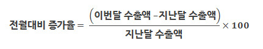
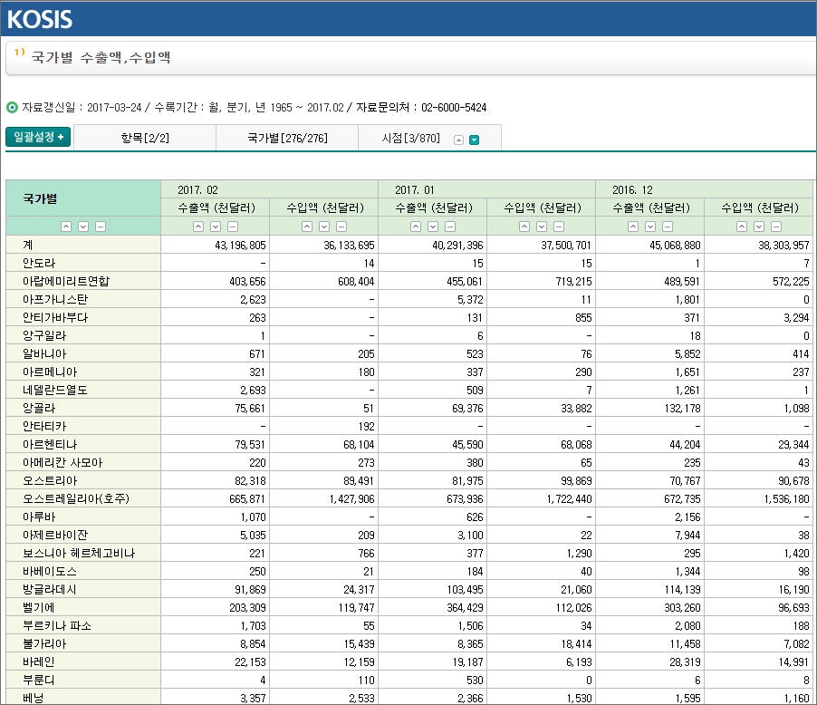
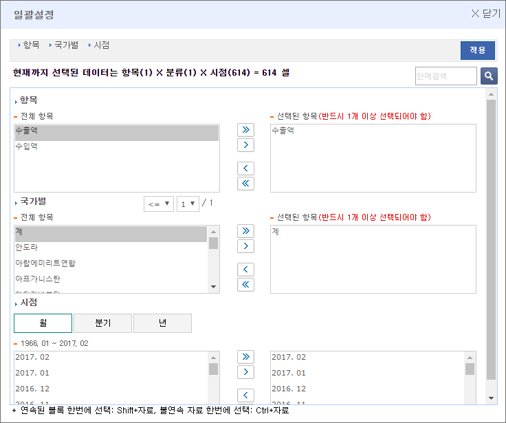
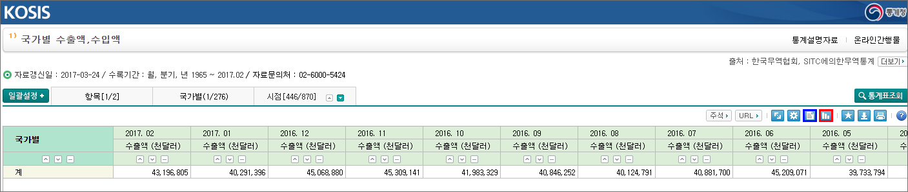
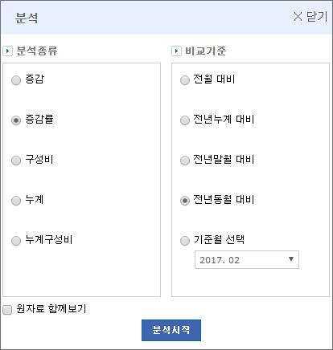
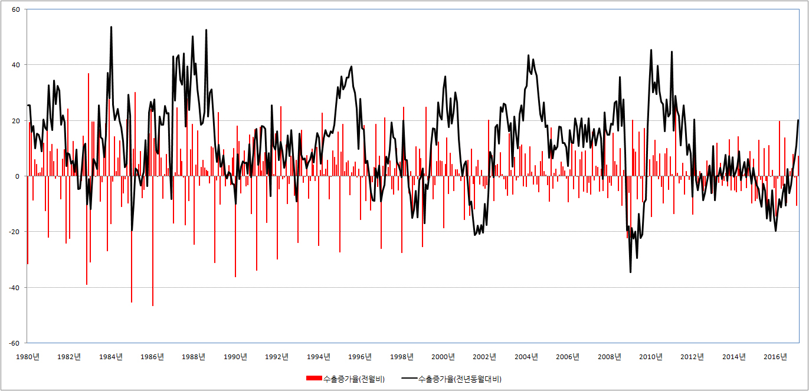

■ 수출 실적 조회 방법
수출이 한국경제에 미치는 영향은 절대적입니다. 수출이 꽃길을 걷는다면 한국 경제도 꽃길을 걷게 되지만, 수출이 죽을 쑤면 한국 경제도 죽을 쑤게 됩니다. 따라서 한국 경제의 미래를 알고 싶다면 반듯이 수출의 변화를 체크해야합니다.
1.수출증가율
수출증가율은 전월대비 증가율과 전년 동월대비 증가율로 나눌 수 있습니다.
전월대비 증가율
2월 수출이 1월에 비해 얼마나 증가했는지 조사한 것이 전월비 증가율입니다. 계산식은 다음과 같습니다.
{kind=link}
전년동월대비 증가율
쉽게 말해서 올해 1월의 수출이 지난해 1월에 비해 얼마나 증가했는지 조사한 것이 전년동월대비 증가율입니다. 계산식은 다음과 같습니다.
{kind=link}
물론 그렇다고 우리가 일일이 계산 할 필요는 없습니다. 통계청에 접속해 몇 번의 클릭만 하면 알아서 계산을 해 줍니다. 따라서 개념 정도만 알아두시면 됩니다.
2. 수출 실적 조회 사이트
한국의 수출현황을 알고 싶다면 통계청의 국가통계포탈이나 관세청의 수출입 무역통계 사이트에 접속하시면 됩니다. 이들 사이트를 이용하면 단순히 수출증가율만이 아니라 수입증가율도 체크할 수 있습니다. 그리고 국가별, 품목별 수출입현황도 조회 할 수 있습니다.
① 통계청 국가통계포탈에 접속
국가통계포탈에 접속해 국가별 수출액,수입액 자료를 조회하면 다음과 같은 화면이 나타납니다.
{kind=link}
② 자료 설정
우리에게 필요한 것은 국가별 수출현황이 아니라 전체 수출액의 증감율입니다. 따라서 좌측 상단의 “일괄설정‘을 클릭합니다. 그러면 아래와 같은 화면이 나타납니다.
{kind=link}
여기에서 수출액, 계, 검색 기간을 설정하고 우측 상단의 적용버튼을 누릅니다. 그러면 아래와 같은 화면이 나타납니다.
{kind=link}
③ 자료 변환
수출액에 대한 자료만 필요하다면 더 이상 작업을 할 것이 없습니다. 하지만 전월대비 증감률이나 전년동월대비 증감률이 궁금하다면 우측상단에 파란색으로 표시된 아이콘을 선택합니다.
그러면 다음과 같은 화면이 나나탑니다.
{kind=link}
이때 수출이 지난달에 비해 얼마나 증가했는지 궁금하면 ‘증감률, 전월대비’를 선택하면 되고, 지난해 같은 기간에 비해 얼마나 증가했는지 궁금하면 ‘증감률, 전년동월대비’를 선택하면 됩니다.
④ 자료 출력
자료를 그래프형태로 보고 싶다면 우측상단에 빨간색으로 표시된 아이콘을 선택하면 됩니다. 만약 자료를 다운받아 분석하고 싶다면 다운로드 아이콘을 클릭하면 됩니다.
※ 만약 국가별 수출입현황이 아니라 반도체, 자동차 같은 품목별 수출입현황이 궁금하다면 여기를 클릭하면 됩니다.
※ 수출증가율(전월대비, 전년동월대비)

{kind=link}